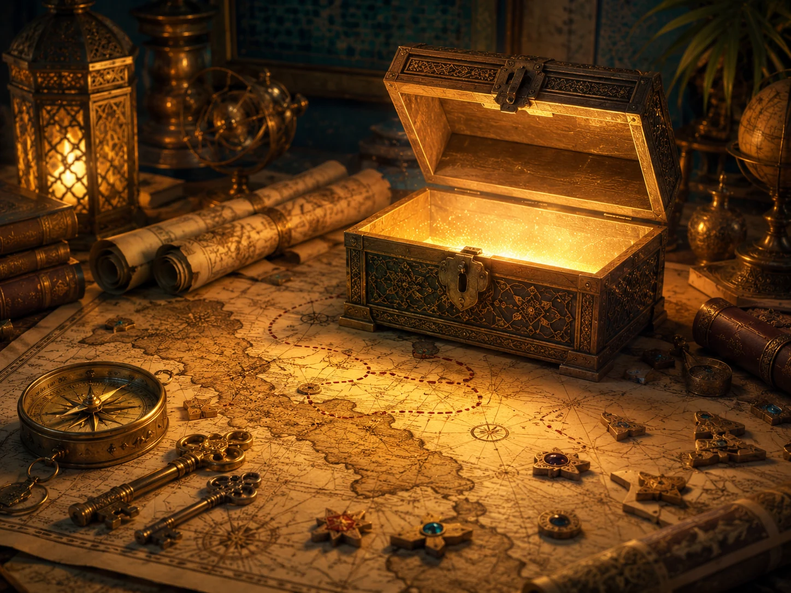
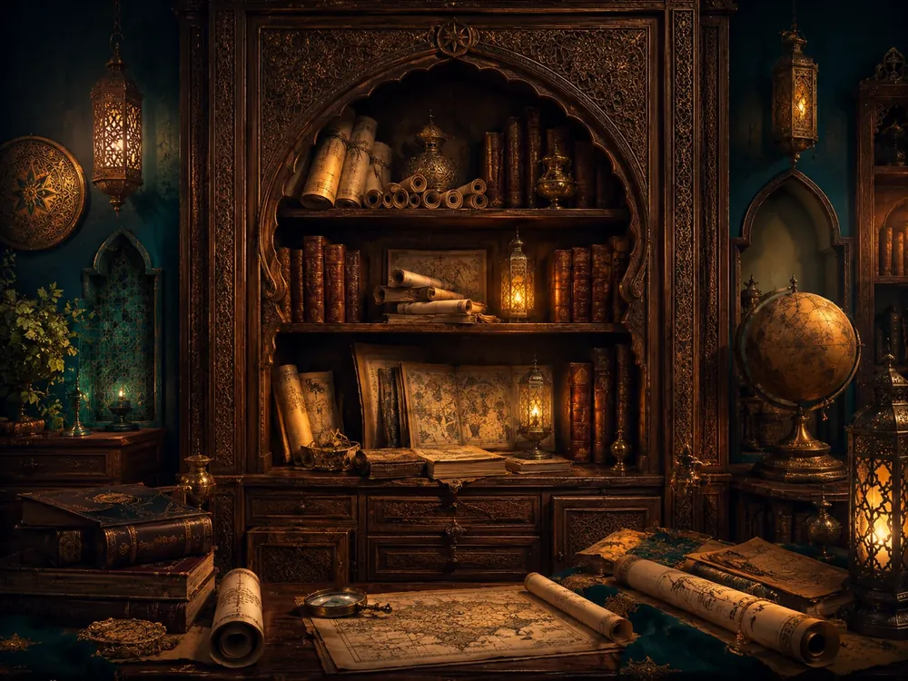
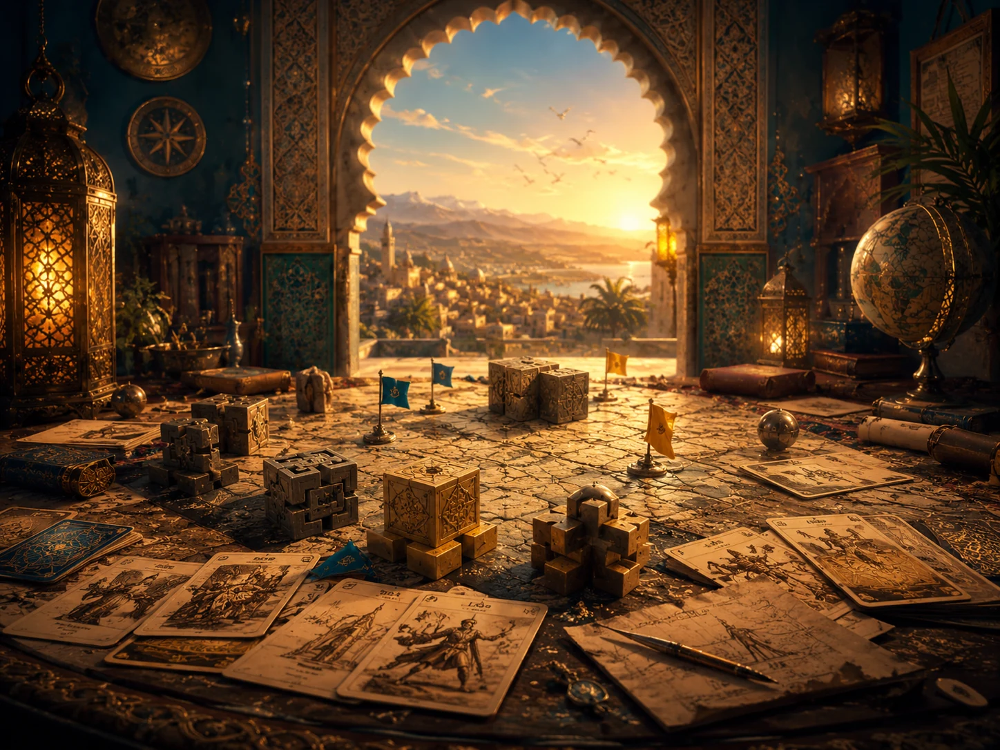
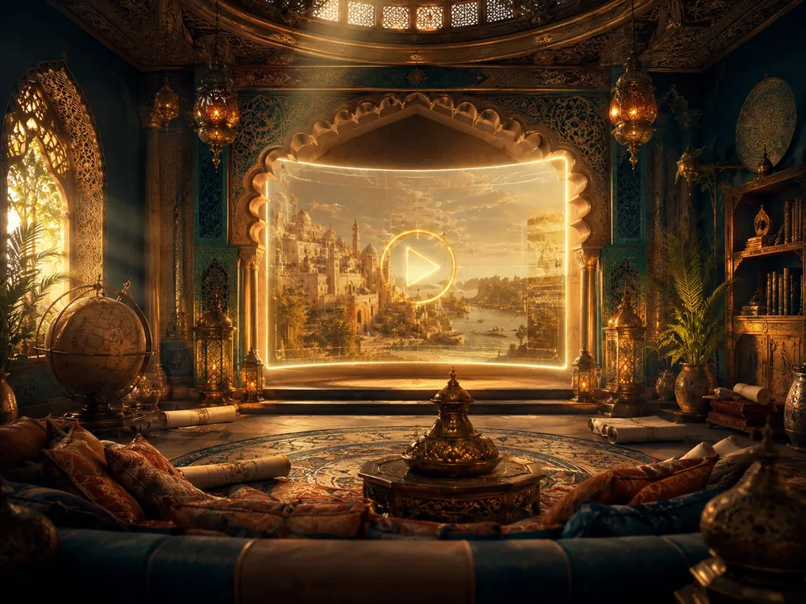
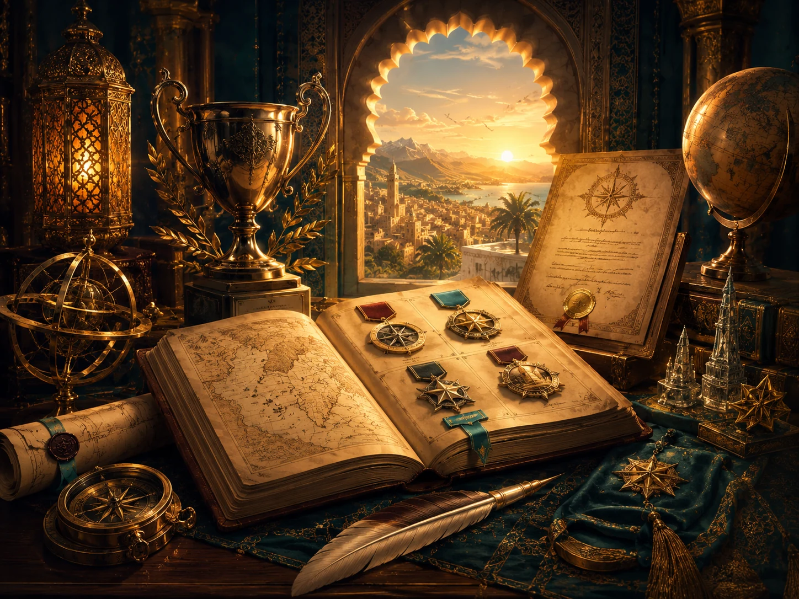

أراضي الاستكشاف
ألغاز، خرائط، صناديق، مفاتيح، ترتيب زمني، تصنيف، وسحب وإفلات.
ابدأ بالمغامرةأمامك عوالم التاريخ، وخبايا الجغرافيا، وتحديات المواطنة. اختر بوابتك، وافتح طريقك نحو الجهوي خطوة بخطوة.
كل بوابة تقودك إلى طريقة مختلفة في الاستعداد: لعب، مراجعة، تحديات، منهجية، امتحانات، شروحات، موارد، أو إنجازات.

ألغاز، خرائط، صناديق، مفاتيح، ترتيب زمني، تصنيف، وسحب وإفلات.
ابدأ بالمغامرة
ملخصات، مفاهيم، تواريخ، خرائط ذهنية، وخلاصات قابلة للطباعة.
راجع بذكاء
تمارين قصيرة ومتدرجة: ربط، تصنيف، استخراج، تفسير، ووثائق.
اختبر فهمكتحليل وثيقة، قراءة خريطة، رسم مبيان، خط زمني، وموضوع مقالي.
أتقن المنهجيةنماذج جهوية، محاكاة زمنية، أرشيف امتحانات، وتصحيح ذاتي.
استعد للامتحان
فيديوهات وكبسولات قصيرة حسب الدرس أو المهارة أو الصعوبة.
شاهد وافهمموارد خارجية منتقاة، مواقع مفيدة، وروابط منظمة دون ضياع.
إبحار ذكي
XP، شارات، شهادة، آخر تقدم، إنجازات، وتوصيات للمهمة القادمة.
تقدمك محفوظخريطة الذاكرة ضاعت! رتّب 5 أحداث من تاريخ المغرب وافتح صندوق الزمن.
المستوى 2 · 580 XP · الشارة التالية قريبة
التعلم يبدأ بالفعل: ترتيب، تصنيف، اكتشاف، بناء، تحقيق، ربط، اختيار، ثم تثبيت قصير.